Say it three times fast, if you dare. “Pancake Bites and Bike Hike Sites.” Sights works as well, since there was a little bit of each.
One of the mamas was on a mission this day. She’d really been at the helm of the whole “bike tour of the city” idea. And while it sounded interesting, it was one of those events we delayed a bit, hoping for the best day possible — and the right kind of energy — to really enjoy it.
Post-musical seemed our best bet, and it proved to be a good move. Not only was our fourth day in Chicago a beautiful one weather-wise, but we’d made it through the drama of the day before, and now, it seemed, we could just exhale a bit and enjoy the sites — and sights — at our feet.
And what better way to take in those sites/sights than through the expertise of a bike tour guide by the name of Mark? An actor no less, as we later learned.
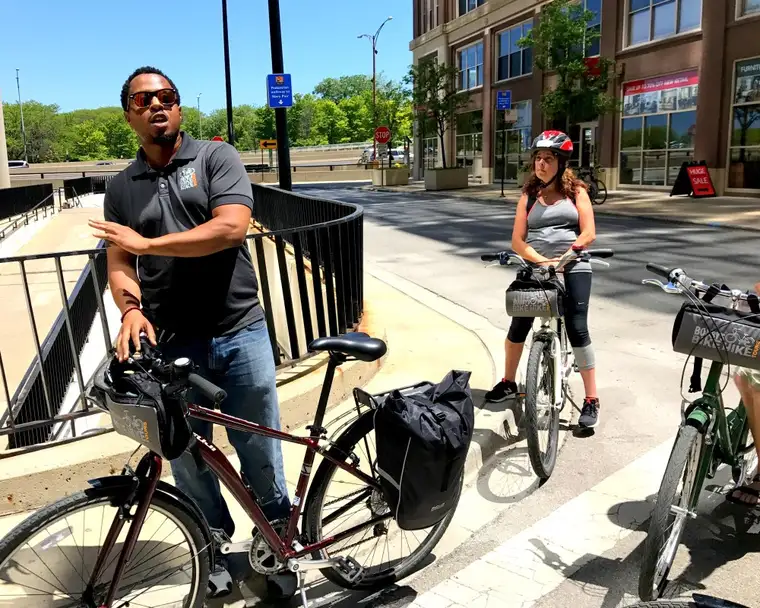
But wait. Back up! We could not do this day without some good carbs in the belly. A couple of the daughters made a plea for pancakes, and so we thought, why not? We found the perfect spot — within walking distance of course! But a little further than some of the eateries. It was a stop well worth going a little out of our way.
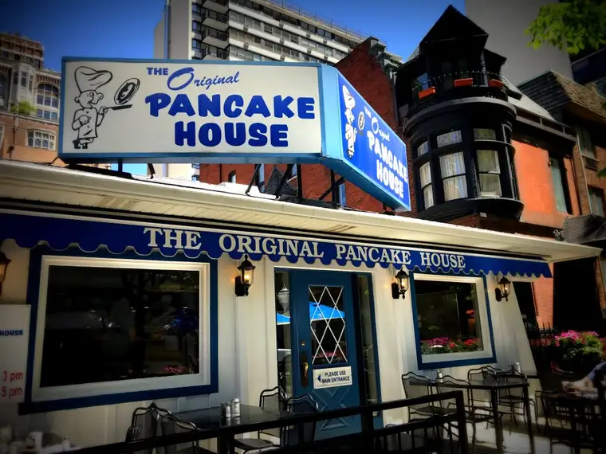

Our plan was to walk to Bobby’s Bike Hike afterward to meet up with the mom-daughter who’d risen earlier and already eaten back at the hotel. So we knew we couldn’t dally too long — that we should think about ordering something fairly quick. The Dutch pancakes looked amazing — I hadn’t had one in years — but the majority of us opted for crepes. The other mama and I shared them — cherry and strawberry — and wow is all I can say!
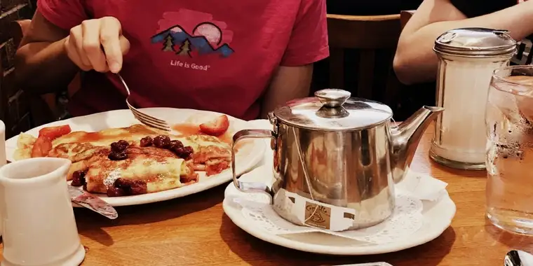
Energy-ready, we headed for the elusive place near the lake where our bikes and the rest of our company awaited. After walking past myriad interesting shops along the way…
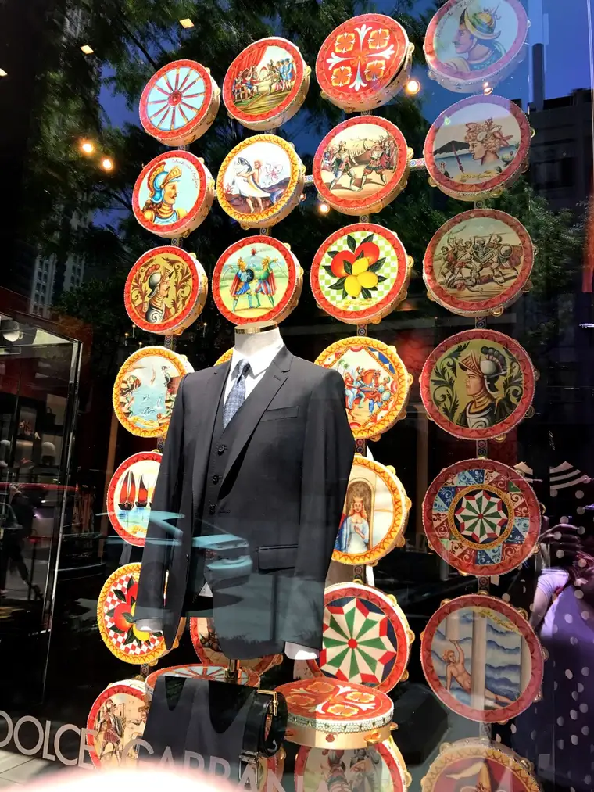
and our destination a couple times — it was a bit hidden — we finally found it, with little time to spare.

Hurriedly, we donned our helmets, filled out necessary paperwork, met the vivacious Mark along with the other 9 bikers in our group, and soon, we were off, heading straight into the city streets with only our bells and a well-organized guide to lead us through.
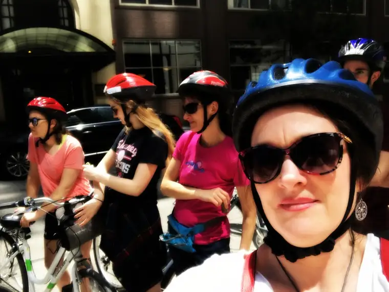
(This was the day I lost one of the earrings you see me wearing here — my favorite ones ever. If you happen to be in Chicago soon and see it somewhere on the streets, please let me know! – Big Sigh…)
The Lakefront Neighborhoods Tour we opted for included biking past or stopping at Gold Coast Mansions, North Avenue Beach, Oprah’s Old Chicago home and neighborhood…
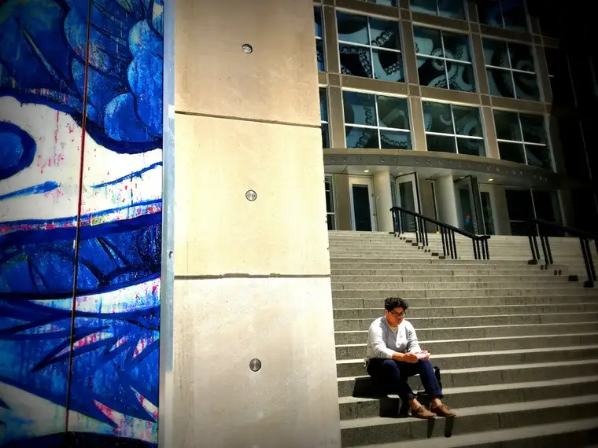
along with the original Playboy Mansion…
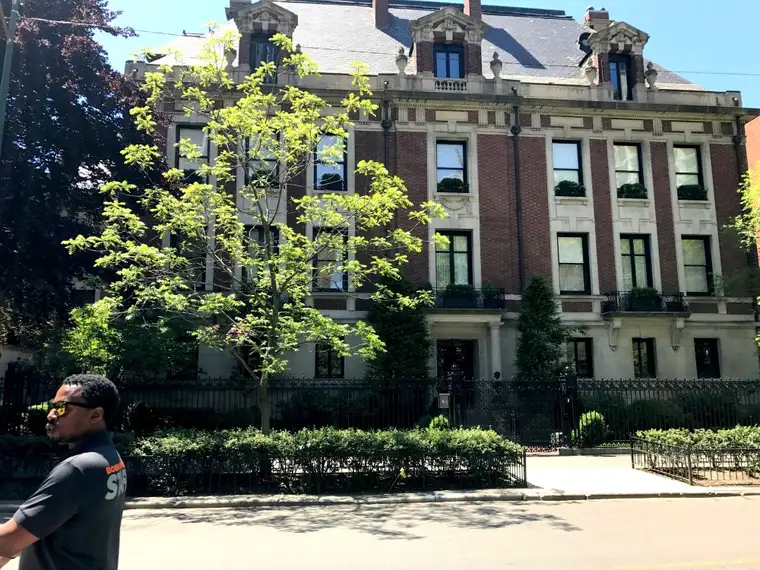
And the eye-catching, soul-snatching St. Michael’s Church (which I documented earlier) and other features of Old Town Historic District…so much of it not recorded because, well, we were on bikes and needed our hands. 🙂
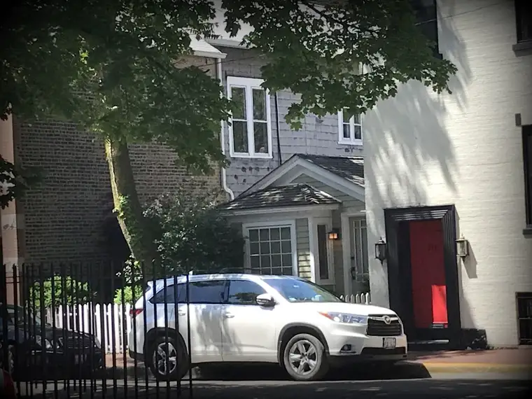

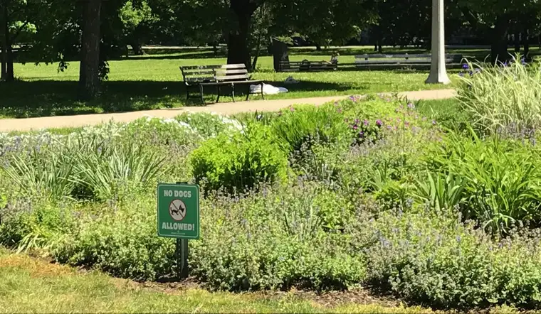
along with Lincoln Park Zoo…
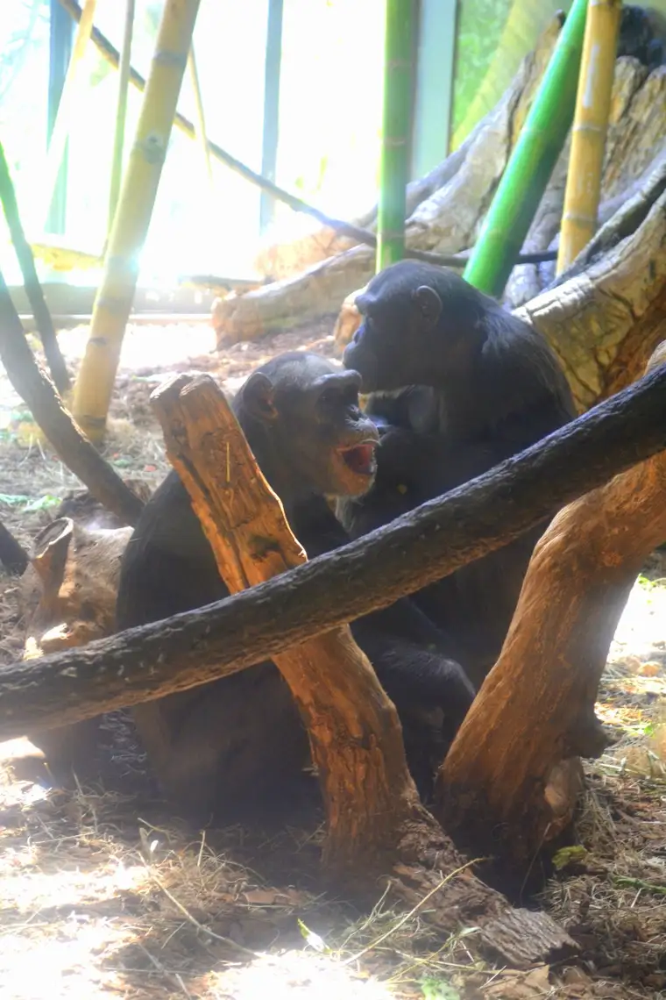
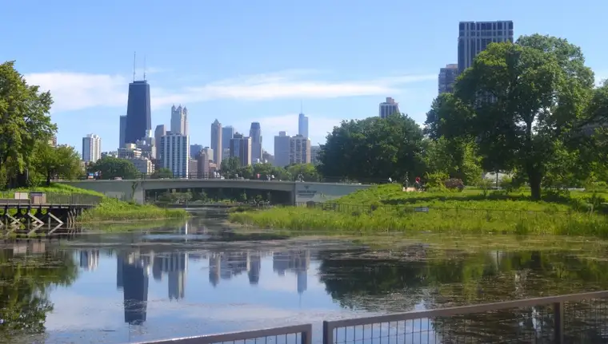
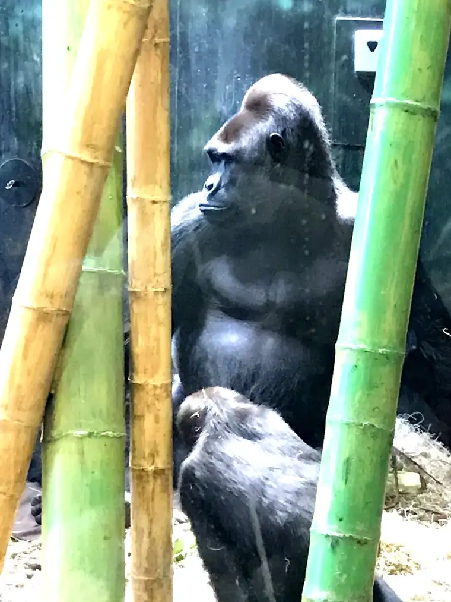
where we paused a while and met a few monkey types, along with a new camel named (appropriately for the reason we’d come to Chicago) “Camilton.” 🙂

Our ride ended with a beautiful “bike hike” along the Chicago Lakefront.
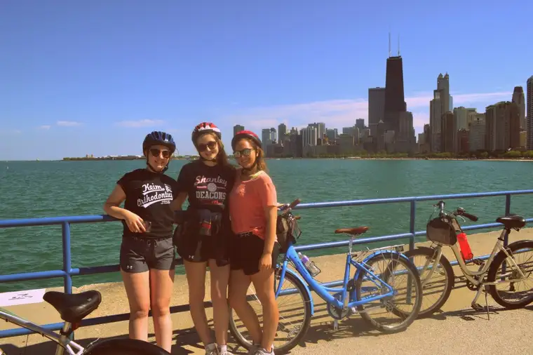
We all agreed that the tour was even more enjoyable than we’d imagined. Much better than any bus or walking tour.
Riding straight through the heart of the city and into some of these interesting neighborhoods was exhilarating! I’d highly recommend it.
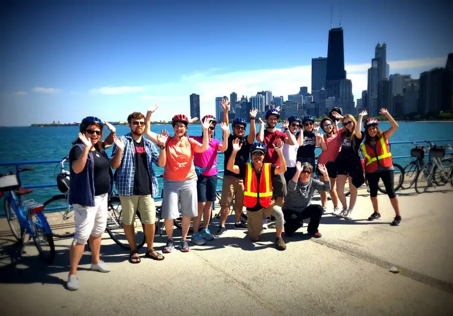
After removing our helmets, the girls begged for burgers, so we found a place at the pier, then headed back to the hotel to rest and get ready for one of our final hurrahs — an exclusive dessert and tea rendezvous at the fabulous Russian Tea Time.
But, there’s time for tea later, so come back, if you will, for my concluding post of our Chicago adventure. We’re nearly done – thanks again for coming along!
Q4U: What is your favorite way to be introduced to a city? What city tour do you most remember, and why?